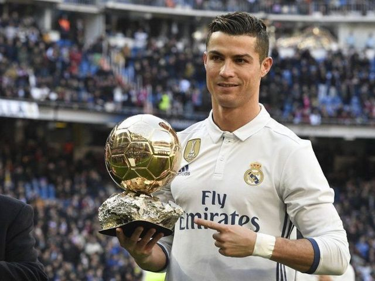

Gareth Bale

Gareth Frank Bale born on the 16th of July 1989 in Cardiff, Wales. Started his career with Southampton then signed for Tottenham Hotspur which he played really well with his 26 goals & 15 assists in his final season with Spurs. These performances caught the eye of top European Clubs. But nonetheless he couldn't resist signing for Real Madrid in 2013.
Karim Benzema

Karim Mostafa Benzema born on December 19th 1987 in Lyon, France. He got into Lyon's youth academy and never left. He stayed at the club from 1997 - 2009. With his staggering performances in Europe and in France with his impressive 66 goals & 27 assists while he was with the French club. But in due time Real Madrid called. Being unsure on whether or not to go, the current President Florentino Perez visited his families home in order to convince Karim to join. The story continues.
Cristiano Ronaldo

Cristiano Ronaldo dos Santos Aveiro born on February 5th 1985 on the small island Madeira, Portugal. Growing up poor, he managed to join Sporting CP in Lisbon, Portugal. He climbed the ranks and played started playing professionaly for Sporting. In a pre-season friendly on August 6, 2003 Ronaldo shined against one of the best clubs in the world Manchester United. He dazzled the team and coach with his skills and creativity on the pitch. The opposition players forced their coach the get him into the team and a few days later he was officially a Manchester United player. The signing was a brilliant successs, with his unbelievable 118 goals & 44 assists with his first spell with the club. But he always said joining Real Madrid was his dream.... he made that dream come true in 2009.